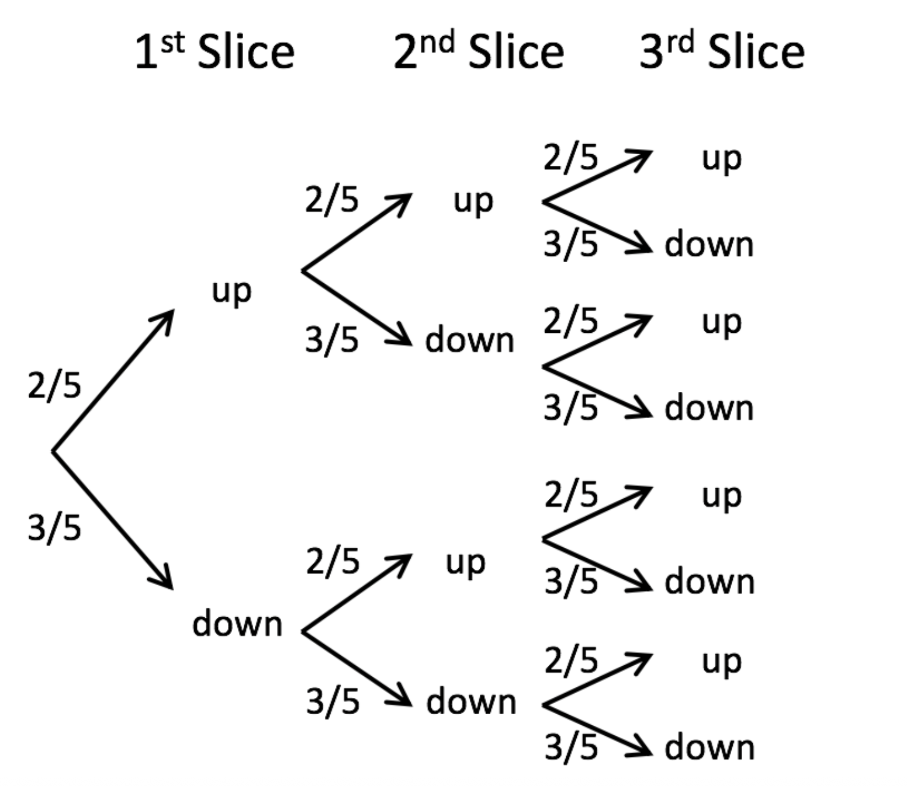
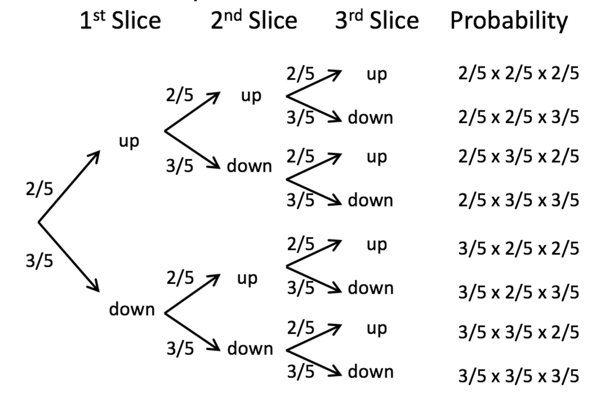
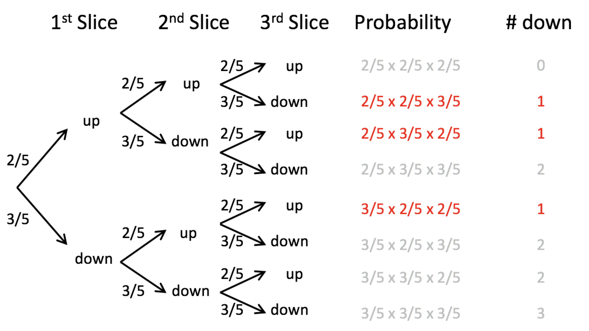
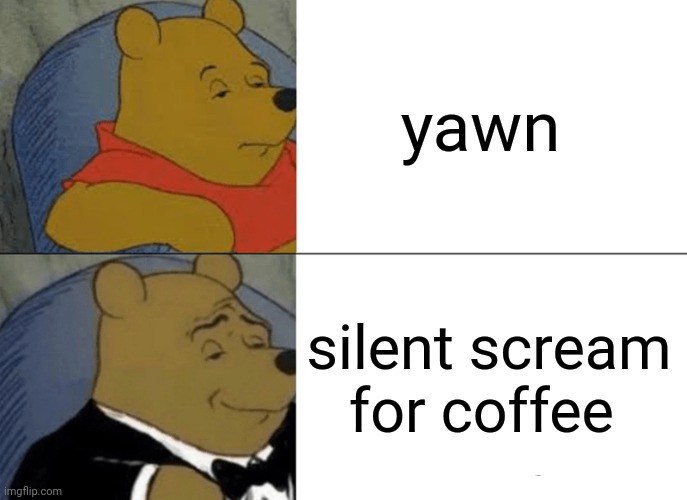

6.1. Analysing proportions
The binomial test
Binomial test
Key learning goals
- Explain probabilities and proportions. Which is the parameter? Which is the estimate?
- Explain the binomial. When would you use it?
- Understand the binomial distribution and connect it to simple probability rules.
- Quantify the expected mean and variability of a binomial distribution.
- Be able to appropriately conduct and interpret a binomial test.
Proportions
A proportion is the fraction of individuals having a particular attribute. i.e. # successes divided by # trials
A proportion is also the probability that any an individual randomly sampled from that population will have that attribute
Example: Murphy’s Law
Researchers found that 6101 of the 9821 slices of toast thrown in the air landed butter side down. What proportion of the slices landed butter side down? Is the deck stacked against us?
How would you test this?
From proportions to the binomial
Let’s use this estimated proportion as our best estimate for the true probability of landing butter side down. To make the math a little easier, let’s assume that the true probability that toast falls butter side down is 60%.
Question: If three people drop their slice of toast, what is the probability that one falls butter side down and two fall butter side up?
HINT: Draw trees… Work on this for a few minutes
From proportions to the binomial
First, draw a tree

From proportions to the binomial
Then, work out probabilities

From proportions to the binomial
Finally, count the ways to get the desired outcome

From proportions to the binomial
Add up probabilities
\(3 \times (2/5\times 2/5\times 3/5)=0.288\)
THIS IS OLD NEWS FOR YOU, SO WHAT ELSE IS NEW?
